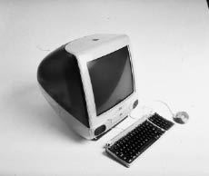

iMac
Merhaba (Yeniden)

Geleceğe Dönüş
Jobs-Ive işbirliğinin ilk büyük tasarım başarısı, Mayıs 1998’de piyasaya sürülen ve hedef kitlesi ev kullanıcıları olan iMac adlı masaüstü bilgisayardı. Jobs bazı koşullar öne sürmüştü. iMac’in kutudan çıkarılır çıkarılmaz kullanılabilecek basitlikte, klavyesi, monitörü ve bilgisayarı bir arada bir ürün olması gerekiyordu. Markanın alametifarikası olan belirgin bir tasarıma sahip olmalıydı. Ayrıca 1.200 dolar civarına satılmalıydı (o sırada Apple’ın fiyatı 2.000 dolardan düşük bilgisayarı yoktu). “Bize komple bir tüketici cihazı olan orijinal 1984 Macintosh’un köklerine geri dönmemizi söyledi,” diye anımsıyordu Schiller. “Dolayısıyla tasarımla mühendisliğin el ele gitmesi gerekiyordu.”
Baştaki plan bir “ağ bilgisayar” üretmekti; Oracle’dan Larry Ellison’ın canla başla savunduğu bu konsept temelde internete ve başka ağlara bağlanmakta kullanılacak, sabit disksiz, ucuz bir terminal anlamına geliyordu. Ama Apple’ın CFO’su Fred Anderson bu ürünü sabit disk ekleyerek evde kullanılabilecek dört başı mamur bir masaüstü bilgisayara dönüştürmekle daha cazip hale getirmeyi savunanlara önderlik etti. Sonunda Jobs bunu kabul etti.
Donanım sorumlusu Jon Rubinstein, Apple’ın lüks ve pahalı profesyonel bilgisayarı Power Mac G3’ün mikroişlemcisiyle başka parçalarını önerilen yeni makinede kullanılabilecek şekilde değiştirdi. Yeni makinenin bir sabit diski ve kompakt disk tepsisi olacaktı; ama Jobs ve Rubinstein oldukça cesur bir adım atarak disket sürücüsü eklememeye karar verdiler. Jobs hokey yıldızı Wayne Gretzky’nin bir sözünü alıntıladı: “Topun gittiği yere doğru kay, daha önce bulunduğu yere doğru değil.” Jobs biraz erken davranmıştı, ama sonunda disket sürücüleri çoğu bilgisayardan kaldırıldı.
Ive ve baş yardımcısı Danny Coster fütüristik tasarım taslakları çizmeye başladılar. Başta ürettikleri bir düzine köpük modelin hepsi Jobs tarafından kabaca reddedildi, ama Ive onu tatlı dille yönlendirmeyi biliyordu. Hiçbir modelin tam anlamıyla uygun olmadığını kabul etti, ama gelecek vaat eden bir tanesine dikkat çekti. Kıvrımlı, oyuncu görünüşlü bu model masaya mıhlanmış, kımıldatılamaz bir taş levha gibi görünmüyordu. “Masaüstüne yeni gelmiş ya da sıçrayıp bir yerlere gitmek üzereymiş hissi veriyor,” dedi Jobs’a.
Bir sonraki sergilemede Ive oyuncakvari modeli geliştirmişti. Dünyaya siyah ya da beyaz olarak bakan Jobs bu sefer modeli öve öve bitiremedi. Köpük prototipi alıp merkeze götürdü ve güvendiği adamlarıyla yönetim kurulu üyelerine gizlice gösterdi. Apple reklamlarında farklı düşünebilmenin muhteşemliğini kutluyordu. Oysa varolan bilgisayarlardan çok farklı bir şey önerilmemişti şimdiye kadar. Jobs’ın elinde nihayet yeni bir şey vardı.
Ive’la Coster’ın önerdikleri plastik kasanın rengi bondi mavisiydi ve yarı saydam olduğundan makinenin içi görülebiliyordu. “Bilgisayarın bukalemun gibi olduğu, ihtiyaçlarınıza göre değişebildiği hissini uyandırmaya çalışıyorduk,” dedi Ive. “Yarı saydamlık bu yüzden hoşumuza gitti. Renkli ve canlıydı. Ayrıca fırlama görünüyordu.”
Yarı saydamlık, bilgisayarın iç mühendisliğini dış tasarımıyla hem metaforik bir şekilde, hem de gerçekten birleştiriyordu. Jobs devre kartlarındaki çiplerin düzgünce dizilmesinde diretmişti hep, asla görülmeyecek olmalarına karşın. Şimdiyse görüneceklerdi. Kasa bilgisayarın bütün bileşenlerine ve bir araya getirilmelerine gösterilen özeni görünür kılacaktı. Oyuncu tasarım sade görünürken bir yandan da gerçek sadeliğin içerdiği derinliği sergileyecekti.
Plastik kasanın sadeliğine ulaşmak bile epey karmaşık bir işti aslında. Ive’la ekibi kasa üretme sürecini kusursuzlaştırmak için Apple’ın Kore’deki imalatçılarıyla birlikte çalıştılar ve hatta yarı saydam renkleri cazip kılmanın yollarını keşfetmek için bir jöle fasulye fabrikasına gittiler. Her kasa 60 dolardan fazlaya mal oluyordu, yani sıradan bir bilgisayar kasasından üç kat pahalıya geliyordu. Diğer şirketlerde, yarı saydam kasanın satışları fazladan maliyeti mazur kılacak kadar arttıracağını göstermek için sunumlar ve araştırmalar yapılırdı herhalde. Jobs ise böyle bir analiz istemedi.
Ayrıca iMac’in tepesine bir tutamaç yerleştirilmişti. İşlevselden çok eğlenceli ve semiyotikti bu. iMac bir masaüstü bilgisayardı. Çoğu insan onu ortalıkta taşımayacaktı. Ama Ive’ın sonradan açıkladığı gibi:
İnsanlar o sıralar teknolojiden huzursuz oluyorlardı. Bir şeyden ürkerseniz ona dokunmazsınız. Annemin iMac’e dokunmaktan korktuğunu hayal edebiliyordum. Dolayısıyla üstünde bir tutamaç olursa, insanların onunla bağ kurmaları mümkün olur diye düşündüm. Onu yaklaşılır kılar. Yakın kılar. Ona dokunmanıza izin verir. Size itaat edeceğini hissetmenizi sağlar. Maalesef gömme tutamaç üretmenin maliyeti epey yüksek. Eski Apple’da olsam fikrimi kabul ettiremezdim. Ama Steve muhteşemdi; onu görür görmez “Çok hoş!” dedi. Düşünce sürecimin tamamını açıklamasam de sezisel olarak anladı. O tutamacın iMac’in dostaneliğinin ve eğlencesinin parçası olduğunu anlayıverdi.
Jobs, Ive’ın estetik arzularına ve tasarımla ilgili çeşitli değişik fikirlerine pragmatik maliyet hesaplarıyla karşı çıkmaya meyilli olan ve Rubinstein’ın desteğini alan üretim mühendislerinin itirazlarını savuşturmak zorunda kaldı. “Fikri mühendislere anlattığımızda,” dedi Jobs, “bunu yapamayacaklarını söylediler ve 38 sebep saydılar. Bense ‘Hayır, hayır, bunu yapacağız,’ dedim. Onlar da ‘Ama neden?’ dediler. Ben de ‘Çünkü ben CEO’yum ve bunun yapılabileceğini düşünüyorum,’ dedim. Dolayısıyla istemeye istemeye yaptılar.”
Jobs, Lee Clow’a, Ken Segall’a ve TBWA\Chiat\Day reklam ekibindeki diğerlerine, gelip hazırladığı şeyleri görmelerini söyledi. Onları sıkı korunan tasarım stüdyosuna getirdi ve Ive’ın gözyaşı şeklindeki yarı saydam tasarımının örtüsünü dramatik bir şekilde kaldırdı; bu tasarım 1980’lerde televizyonda oynatılan, gelecekle ilgili Jetgiller adlı çizgi filmden çıkıp gelmiş gibiydi. Bir an afalladılar. “Resmen şoke olmuştuk, ama açık konuşamadık,” diye anımsıyordu Segall. ‘Tanrı’m, bunlar ne yaptıklarını biliyorlar mı?’ diye düşünüyorduk aslında.” Jobs isim önermelerini istedi. Segall sonradan beş isim önerdi ve bir tanesi “iMac”ti. Jobs başta önerilerin hiçbirini beğenmedi, dolayısıyla Segall bir hafta sonra yeni bir listeyle geldi, ama ajansın hâlâ “iMac”i yeğlediğini söyledi. Jobs “O isimden bu hafta nefret etmiyorum, ama hâlâ sevmiyorum,” dedi. İsmi bazı prototiplere serigrafiyle yazdırmayı denedi ve giderek hoşlandı. Böylece bilgisayarın ismi iMac oldu.
iMac’in tamamlanması gereken sürenin sonu yaklaştıkça Jobs’ın efsanevi sinirliliği geri döndü, özellikle de imalat meseleleri konusunda. Bir ürün değerlendirme toplantısında sürecin yavaş işlediğini fark etti. “Müthiş hiddet nöbetlerinden birini geçirdi, gerçekten safi hiddet sergiledi,” diye anımsıyordu Ive. Jobs masayı turlayarak, Rubinstein’dan başlayarak herkese saldırmaya girişti. “Biliyorsunuz ki burada şirketi kurtarmaya çalışıyoruz,” diye bağırdı, “ama sizler köstek oluyorsunuz!”
Orijinal Macintosh ekibi gibi iMac ekibi de ürünü, şatafatlı bir şekilde tanıtılmasından önce tamamlamayı güç bela başardı. Ama bu arada Jobs bir kez daha patladı. Tanıtım sunumunun prova vakti geldiğinde, Rubinstein iki tane çalışan prototip üretmişti. Tamamlanmış ürünü ne Jobs, ne de başkası görmüştü daha önce; Jobs sahnede ona bakınca önde, ekranın altında bir düğme gördü. Düğmeye basınca CD tepsisi açıldı. “Bu ne be?!?” diye sordu Jobs, pek kibar olmayan bir şekilde. “Hiçbirimizden çıt çıkmadı,” diye anımsıyordu Schiller, “çünkü CD tepsisinin ne olduğunu bildiği barizdi.” Jobs bağırıp çağırmayı sürdürdü. CD okuyucunun tepsisiz olması gerektiğinde diretti ve lüks arabalarda bulunan zarif CD çalarları örnek verdi. Öyle sinirlenmişti ki Schiller’ı yanından kovdu; Schiller Rubinstein’ı arayıp oditoryuma çağırdı. “Steve, bileşenleri konuşurken sana gösterdiğim okuyucu buydu,” diye açıkladı Rubinstein. “Hayır, onun tepsisi yoktu, sadece slotu vardı,” dedi Jobs ısrarla. Rubinstein geri adım atmadı. Jobs’ın hiddeti dinmedi. “Neredeyse ağlayacaktım, çünkü değişiklik yapmak için çok geçti,” diye anımsıyordu Jobs sonradan.
Provayı ertelediler ve Jobs ürün tanıtımının tamamını iptal edecekmiş gibi göründü bir süre. “Ruby bana ‘Deli miyim ben?’ dercesine baktı,” diye anımsıyordu Schiller. “Steve’le birlikte hazırlayacağım ilk ürün tanıtımıydı bu ve zihniyetini ilk kez anladım; ürün uygun değilse tanıtmayacaktık.” Sonunda iMac’in bir sonraki versiyonundaki CD okuyucunun tepsisiz olmasında karar kıldılar. “Tanıtımı ancak olabildiğince kısa sürede slot moduna geçeceksek yaparım,” dedi Jobs ağlamaklı bir şekilde.
Oynatmayı planladığı videoda da bir sorun vardı. Bu videoda Jony Ive tasarımının mantığını açıklıyor ve ‘Jetgiller nasıl bir bilgisayar kullanırdı? Gelecek geçmişte kalmış gibiydi,’ diyor. O anda çizgi filmden iki saniyelik bir parça, bir görüntü ekranına bakan Jane Jetgil beliriyor ve sonraki iki saniyelik klipte de Jetgiller bir Noel ağacının çevresinde kıkırdaşıyorlar. Bir provada, bir prodüksiyon asistanı Jobs’a klipleri çıkarmaları gerektiğini, çünkü Hanna-Barberra’nın onları kullanmalarına izin vermediğini söyledi. “Kalsınlar,” diye bağırdı Jobs ona. Asistan bunun kanunlara aykırı olduğunu açıkladı. “Umurumda değil,” dedi Jobs. “Onları kullanacağız.” Böylece klipler kaldı.
Lee Clow bir dizi renkli dergi reklamı hazırlıyordu ve deneme baskılarını gönderdiği Jobs onu arayıp ağzına geleni söyledi. Jobs reklamdaki mavinin seçtikleri iMac fotoğrafındaki maviden farklı olduğunda diretiyordu. “Sizler ne yaptığınızı bilmiyorsunuz,” diye bağırdı Jobs. “Reklamları başkasına yaptıracağım, çünkü bu berbat.” Clow kendini savundu. Onları karşılaştır, dedi. Ofiste olmayan Jobs haklılığında diretti ve bağırmayı sürdürdü. Sonunda Clow onun orijinal fotoğrafları eline alıp oturmasını sağladı. “Ona mavinin diğer mavi olduğunu sonunda kanıtladım.” Yıllar sonra Gawker web sitesindeki bir Steve Jobs tartışma panosunda, Palo Alto’daki, Jobs’ın evinden birkaç sokak ötedeki Whole Foods marketinde çalışmış olan birisi şu öyküyü anlattı: “Bir ikindi vakti el arabalarını iterken, engellilere ayrılan yere park edilmiş gümüşi bir Mercedes gördüm. İçinde Steve Jobs vardı, araba telefonuna haykırıyordu. İlk iMac’in tanıtılmasından hemen önceydi bu ve ‘Yeterince. Mavi. Değil. Diyorum!!!’ dediğini duyduğuma gayet eminim.”
Jobs her zamanki gibi dramatik bir tanıtım yapmakta odaklanmıştı. CD okuyucu tepsisi meselesine sinirlendiği için bir provayı iptal ettikten sonra, şovun muhteşem olması için diğer provaları uzattı. Sahneye çıkıp da “Yeni iMac’e merhaba deyin,” diyeceği doruk anını defalarca prova etti. Yeni makinenin yarı saydamlığının canlı görünmesi için ışıklandırmanın kusursuz olmasını istiyordu. Ama birkaç denemeden sonra hâlâ tatmin olmamıştı; Sculley 1984’teki orijinal Macintosh tanıtımının provalarında Jobs’ın sahne ışıklarına kafayı taktığına tanık olmuştu ve şimdi o durumun bir benzeri yaşanıyordu. Jobs ışıkların daha çok ve daha erken açılmasını emretti, ama yine de tatmin olmadı. Bu yüzden oditoryumun koridorunda yürüyüp ortadaki bir koltuğa çöktü ve ayaklarını önündeki koltuğa attı. “Düzgün yapana kadar devam edelim, tamam mı?” dedi. Tekrar denediler. “Hayır, hayır,” diye yakındı Jobs. “Bu hiç olmadı.” Bir sonraki seferde ışıklar yeterince parlaktı, ama geç yanmışlardı. “Sıkılmaya başlıyorum,” diye homurdandı Jobs. Sonunda iMac tam uygun şekilde parıldadı. “Hah! Aynen öyle! Harika!” diye seslendi Jobs.
Jobs eski akıl hocası ve ortağı Mike Markkula’yı bir yıl önce yönetim kurulundan ayrılmaya zorlamıştı. Ama yeni iMac’iyle öyle gurur duyuyordu ve orijinal Macintosh’la bağlantısı konusunda öyle duygusaldı ki, Markkula’yı bilgisayarı görmesi için Cupertino’ya davet etti. Markkula gördüklerinden etkilendi. Tek itirazı Ive’ın tasarımını yaptığı yeni fareydi. Hokey topuna benziyor, dedi Markkula; insanların ondan nefret edeceğini söyledi. Jobs buna katılmıyordu, ama Markkula’nın haklı olduğu ortaya çıktı. Bunun dışında makine tıpkı selefi gibi manyak iyiydi.
Tanıtım, 6 Mayıs 1998
Jobs 1984’te orijinal Macintosh’u tanıtırken yeni bir çeşit tiyatro yaratmıştı: Ürünün sergilenmesi çığır açıcı bir olay olarak gösteriliyordu ve doruk anında, Tanrı “Işık olsun,” demişçesine gökyüzü yarılıyor, aşağı bir ışık düşüyor, melekler şarkı söylüyor ve seçilmiş imanlılar korosu hep bir ağızdan Haleluya diyordu. Jobs bu sefer, Apple’ı kurtaracağını ve kişisel bilgisayar dünyasında yeni bir çığır açacağını umduğu ürünü gösterişli bir şekilde sergilemek için, Cupertino’daki De Anza Devlet Üniversitesi’nin Flint oditoryumunu seçti sembolik bir şekilde; burayı 1984’te de kullanmıştı. Şüpheleri dağıtacak, askerleri gaza getirecek, yazılımcılar topluluğunun desteğini kazanacak ve yeni makinenin çok satmasını sağlayacaktı. Ama bu gösteriyi hazırlamasının bir sebebi de emprezaryoluk yapmayı sevmesiydi. Muhteşem bir şov sergilemek onu muhteşem bir ürün sunmak gibi tatmin ediyordu.
Duygusal yönünü sergileyerek, tanıtıma en ön koltuklara davet ettiği üç kişiye zarifçe seslenmekle başladı. Üçüne de yabancılaşmıştı, ama şimdi tekrar kendisine katılmalarını istiyordu. “Şirketi Steve Wozniak’la birlikte, babamın garajında başlatmıştım ve bugün Steve burada,” dedi, onu göstererek ve seyircileri alkışlamaya teşvik ederek. “Sonra aramıza Mike Markkula katıldı, kısa süre sonra da ilk başkanımız Mike Scott katıldı,” diye devam etti. “İkisi de bugün aramızdalar. Ve bu üç adam olmasa hiçbirimiz burada olmazdık.” Yine alkış kopunca gözleri bir an yaşardı. Seyircilerin arasında Andy Hertzfeld ve orijinal Mac ekibinin çoğu da vardı. Jobs onlara gülümsedi. Gurur duymalarını sağlamak üzereymiş gibi hissediyordu.
Apple’ın yeni ürün stratejisinin çizelgesi ve yeni bilgisayarın performansıyla ilgili bazı slaytlar gösterdikten sonra, yeni bebeğini sergilemeye hazırdı. “Günümüzde bilgisayarlar böyle görünüyor,” dedi, arkasındaki büyük ekranda bej bir kutumsu donanım setiyle monitör belirirken. “Ve sizlere şimdiden sonra nasıl görüneceklerini gösterme ayrıcalığına erişmek istiyorum.” Sahnenin ortasındaki masanın üstündeki örtüyü çekip alarak yeni iMac’i sergiledi; ışıklar tam zamanında yanınca bilgisayar ışıl ışıl parladı. Jobs fareye basınca, orijinal Macintosh’un tanıtımında olduğu gibi, ekranda bilgisayarın yapabileceği bütün muhteşem şeyleri gösteren görüntüler belirdi peş peşe. Sonunda 1984 Macintosh’u süslemiş olan “merhaba” yazısı aynı eğlenceli yazı tipiyle belirdi, ama bu kez altına parantez içinde “yeniden” sözcüğü yazılmıştı. Merhaba (yeniden). Alkışlar ortalığı inletti. Jobs geriye çekilip yeni Macintosh’una gururla baktı. “Başka bir gezegenden gelmiş gibi,” deyince seyirciler güldü. “İyi bir gezegenden. Daha iyi tasarımcılara sahip bir gezegenden.”
Jobs bir kez daha yeni bir ikonik ürün üretmişti; bu seferki yeni bir milenyumun habercisiydi. “Farklı düşün” sözünün vaadini yerine getiriyordu. Bej kutular, bir sürü kablolu monitörler ve kalın kullanım kılavuzları yerine burada dokununca pürüzsüz gelen ve göze kızılgerdan yumurtası gibi hoş görünen, dostane ve atılgan bir ev aygıtı vardı. Onu küçük, şirin tutamacından tutup kaldırarak zarif, beyaz kutusundan çıkarır çıkarmaz bir duvar prizine bağlayabiliyordunuz. Bilgisayarlardan korkan insanlar artık bilgisayar istiyorlardı; onu başkaları tarafından görülebileceği bir odaya koymak istiyorlardı, görenler hayran kalsınlar ve belki de kıskansınlar diye. “Bilimkurgu parıltısını kokteyl şemsiyesinin kiç havailiğiyle birleştiren bir donanım,” diye yazdı Steven Levy Newsweek’te; “yıllardır piyasaya sürülen en havalı görünüşlü bilgisayar olmasının yanı sıra, Silikon Vadisi’nin eski rüya şirketinin uyurgezerlikten kurtulduğunun gururla ilanı.” Forbes iMac’in “endüstriyi değiştiren bir başarı” olduğunu yazdı ve ardından John Sculley sürgünden geri dönerek “Steve Apple’a 15 yıl önce büyük başarı kazandıran basit stratejiyi uyguladı tekrar: hit ürünler üretme ve bunları muhteşem bir şekilde pazarlama stratejisini,” dedi.
Tek bir kişiden eleştiri geldi, tanıdık birinden. iMac övgü yağmuruna tutulurken, Bill Gates Microsoft’u ziyarete gelen bir grup mali analiste iMac’in modasının çabuk geçeceğini söyledi. “Apple şimdiye kadar sadece renklerde lider oldu,” dedi Gates, şaka olsun diye kırmızıya boyamış olduğu bir Windows tabanlı PC’yi göstererek. “Bu alanda ona yetişmemiz uzun sürmez.” Küplere binen Jobs bir muhabire Gates’in tamamen zevksiz olduğunu, adamın iMac’i diğer bilgisayarlardan çok daha cazip kılan şeyin ne olduğunu bile anlamadığını söyledi. “Rakiplerimizin eksikliği şu ki, onlar meselenin moda ve yüzeysel görünüş olduğunu sanıyorlar,” dedi. “Şu berbat bilgisayarı biraz renklendirdik mi iMac kadar başarılı olur diyorlar.”
iMac Ağustos 1998’de 1.299 dolardan satışa sunuldu. İlk altı haftada 278.000 adet satıldı, senenin sonundaysa satışları 800.000’i buldu; böylece Apple’ın gelmiş geçmiş en hızlı satılan bilgisayarı oldu. Satışların %32’sinin ilk kez bilgisayar satın alan insanlara, %12’sininse önceden Windows makineleri kullananlara yapılması özellikle dikkat çekiciydi.
Ive kısa süre sonra iMac’ler için bondi mavisinin yanı sıra dört yeni hoş renk buldu. Aynı bilgisayarı beş farklı renkte satmak büyük imalat, depolama ve dağıtım sorunlarına yol açacaktı elbette. Çoğu şirkette, eski Apple’da bile, maliyetin ve kârın hesaplanması için araştırmalar ve toplantılar yapılırdı. Ama Jobs yeni renkleri çok beğendi ve diğer yöneticileri tasarım stüdyosuna çağırdı. “Çeşit çeşit renkler kullanacağız!” dedi onlara heyecanla. Onlar gittikten sonra Ive ekibine hayretle baktı. “Başka çoğu yerde öyle bir kararın verilmesi aylar sürerdi,” diye anımsıyordu Ive. “Steve ise yarım saatte işi bitirdi.”
Jobs’ın iMac’te yapmak istediği önemli bir geliştirme daha vardı: tiksindiği o CD tepsisinden kurtulmak. “Son derece yüksek teknolojili bir Sony müzik setinde slotlu CD okuyucu görmüştüm,” dedi, “bu yüzden sürücü imalatçılarına gidip, dokuz ay sonra piyasaya süreceğimiz iMac için slotlu okuyucu üretmeleri konusunda anlaştım.” Rubinstein onu bu değişiklikten vazgeçirmeye çalıştı. Sadece müzik çalmakla kalmayıp CD’lere kayıt yapabilen yeni okuyucuların çıkacağını tahmin ediyordu ve bunlar başta slotlu değil tepsili üretileceklerdi. “Slotları seçersen teknolojinin gerisinde kalırsın hep,” iddiasında bulundu Rubinstein.
“Umurumda değil, istediğim bu,” diye karşılık verdi Jobs. San Francisco’daki bir suşi barda öğle yemeği yiyorlardı ve Jobs sohbeti yürüyüş yaparak sürdürmelerinde diretti. “Slotlu CD okuyucu istiyorum, bu bana kıyağın olsun,” dedi Jobs. Rubinstein bunu kabul etti elbette, ama haklı olduğu sonunda ortaya çıktı. Panasonic müzik okuyup CD’ye yazabilen bir CD okuyucu üretti ve bunlar başta tepsiliydi sadece. Bunun sonraki birkaç yılda ilginç bir etkisi olacaktı: Apple kendi şarkılarını ripleyip yazdırmak isteyen kullanıcılara hitap etmekte gecikecekti, ama Jobs’ın müzik piyasasına girmesi gerektiğini sonunda fark etmesiyle birlikte bu durum Apple’ı rakiplerinin önüne geçmek için yaratıcı ve cesur olmaya zorlayacaktı.